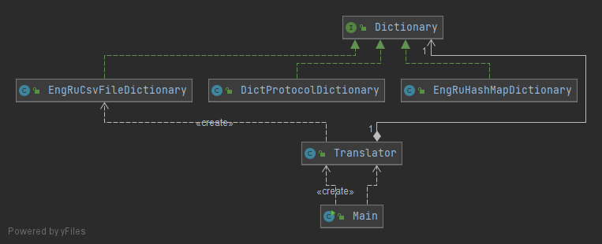

Despite the fact that csv file dictionaries was a great improvement over in memory versions, in the age of the internet company decided to discover some internet based dictionaries and services. We got a new implementation of our Dictionary and should introduce it to our application, however, this doesn't mean that we should get rid of csv file dictionaries.
